Manual de uso · Mayorista pide · el piso arma en Mi repo
Capturas tomadas del hub con un pedido de ejemplo (N° 10090 GPAZD). Octubre 2026.
| Prioridad | Cómo avisa | Dónde aparece |
|---|---|---|
| 🚨 Urgente | Suena 3 veces | Arriba de todo |
| ⏰ Normal | Suena 2 veces | Después de los urgentes |
| 🌙 Baja | Un pitido | Al final |
Dentro de la misma prioridad, primero el más viejo.
1Entrá a Mayorista → Pedidos de venta. Elegí el período (📅 Hoy, Esta semana…) y abrí el pedido. Arriba a la derecha está el botón rojo Pedir armado.
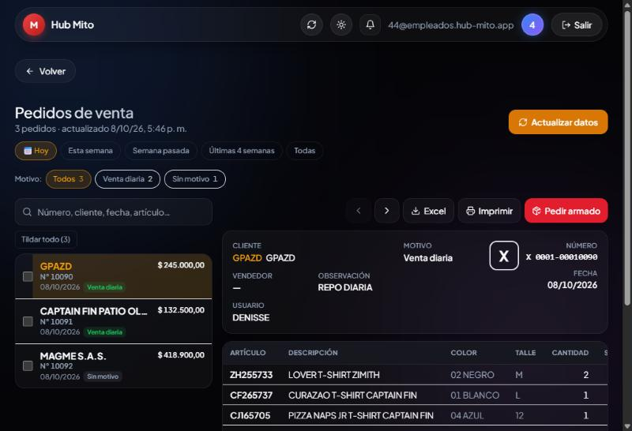
2Elegí la prioridad y, si querés, una observación para el piso (por ejemplo, «Sale hoy con el transporte»). Tocá Pedir armado.
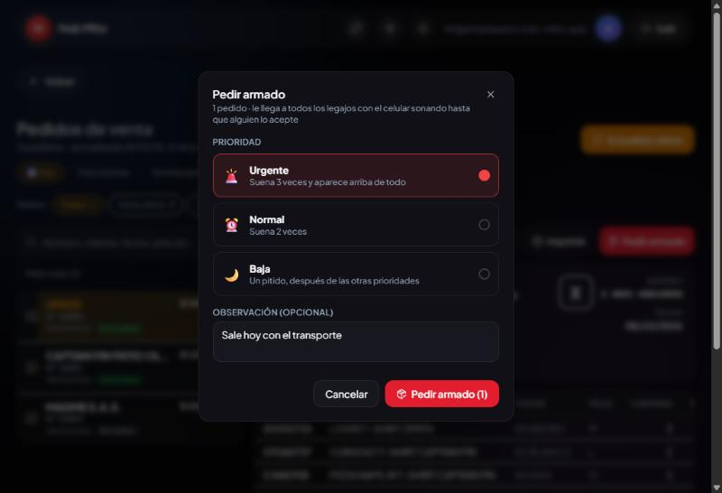
3Listo: arriba aparece la confirmación y el pedido dice . El botón cambia a Pedido a armar.
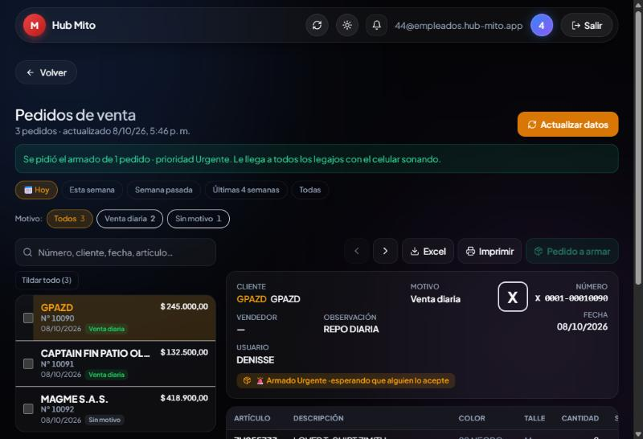
4Varios a la vez: tildá los pedidos en la lista (o Tildar todo). Abajo aparece una barra con Pedir armado para todos los seleccionados.
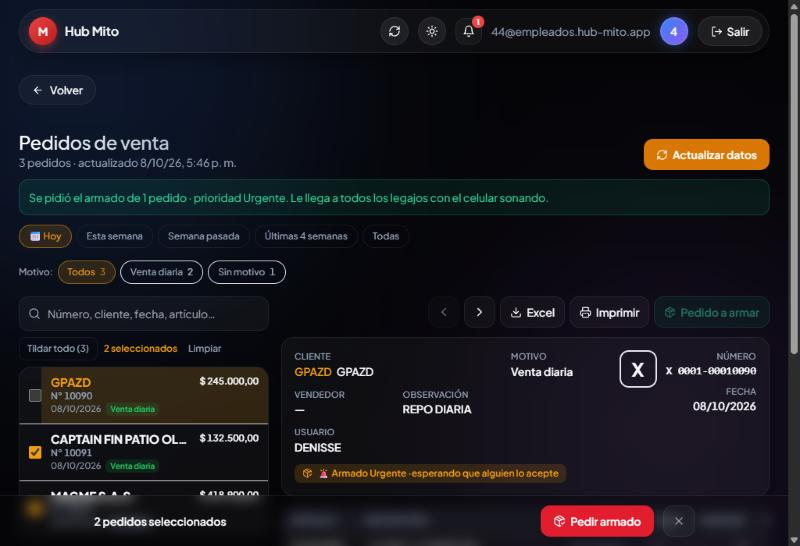
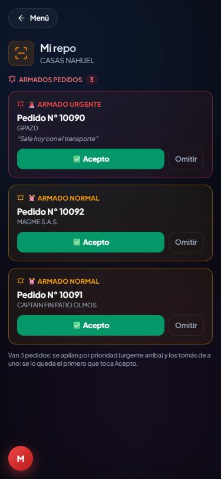
1En Mi repo, arriba, está Armados pedidos con los pedidos que esperan a alguien, ordenados por prioridad.
Cada tarjeta muestra la prioridad, el N° de pedido, el cliente y la observación del mayorista.
2Tocá ✅ Acepto para quedártelo. Si no lo vas a hacer vos, Omitir lo saca de tu pantalla (les sigue apareciendo a los demás).
La primera vez, tocá Activar avisos en Mi repo y aceptá el permiso. Así suena aunque el celular esté bloqueado.
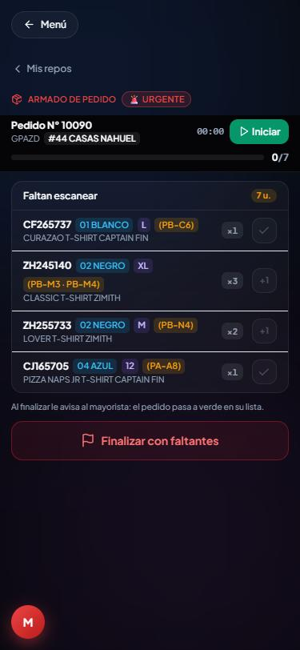
1Al aceptar se abre el pedido con la lista Faltan escanear. Cada artículo muestra:
2Tocá Iniciar. Arranca el cronómetro y se habilitan el escáner y los tildes.
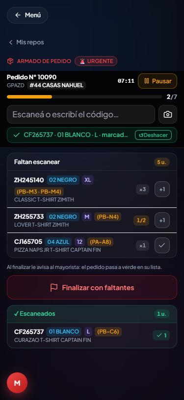
3Escanear: con el escáner inalámbrico, escribiendo el código o con el botón de la cámara (lee QR, Code 39, Code 128 y EAN). Cada escaneo suma una unidad.
4Tildar a mano (si la cámara no lee):
5Lo marcado pasa a ✓ Escaneados. Si te equivocaste, tocá ↺ Deshacer en el cartel verde.
La barra de arriba muestra el avance (2/7 unidades).
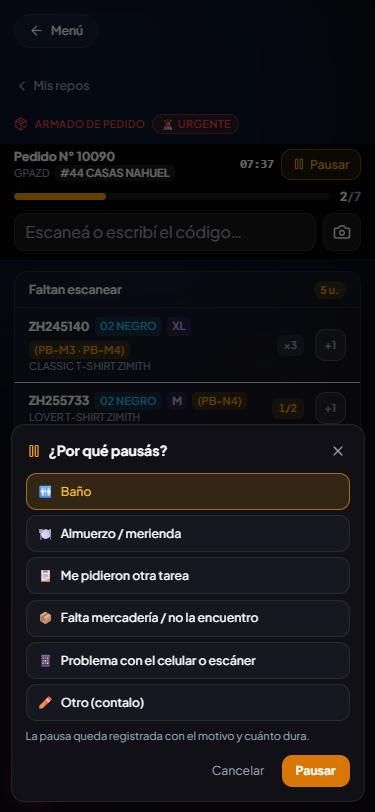
6Tocá Pausar y elegí el motivo:
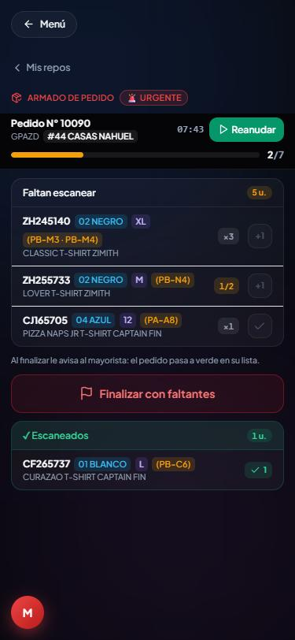
7En pausa el reloj se frena y los tildes quedan bloqueados. Para seguir, tocá Reanudar.
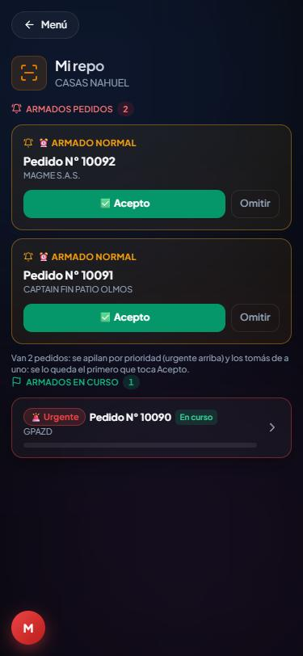
8Si volvés a Mis repos, el pedido aparece en Armados en curso. Tocalo para seguir donde lo dejaste.
Si en el medio entra un Urgente: aceptalo y tocá Iniciar. El que estabas haciendo se pausa solo. Cuando termines el urgente, volvé al otro y tocá Reanudar.
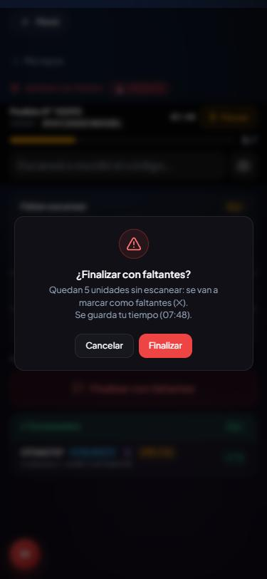
1Cuando está todo, el pedido se cierra solo. Si falta algo que no hay, tocá Finalizar con faltantes.
2Confirmá. Las unidades que no se marcaron quedan como faltantes (✕) y se guarda tu tiempo.
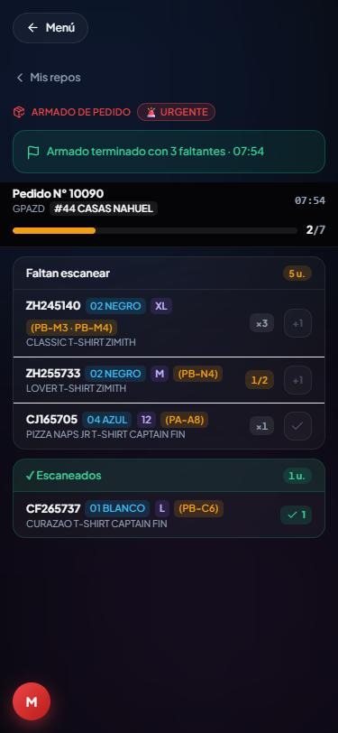
3Aparece el cartel Armado terminado con 3 faltantes · 07:54. Al mayorista se le pone el pedido en verde en su lista.
En Pedidos de venta, cada pedido muestra en la lista:
| Cómo se ve | Qué significa |
|---|---|
| Sin color | Todavía nadie lo aceptó. |
| A quién le toca (en repos diarias, el responsable del local). | |
| EN CURSO ✓ 3/7 + 👤 NOMBRE (#legajo) | Lo está armando ese legajo; van 3 de 7 unidades. Fondo verde claro. |
| ARMADO 🏁 o REPO ✓ | Terminado. Fondo verde fuerte. |
Al abrir el pedido, cada artículo se pinta según lo que salió:
La lista se actualiza sola cada 12 segundos.
Si un armado se pidió por error, el administrador ve en el detalle del pedido el botón Sacar armado. Pide confirmación y borra el armado y lo escaneado en él; el pedido vuelve a como estaba.
En Mayorista → Eficiencia mayorista: la estadística de repos por día y semana, el Tiempo real en piso y Pausas en piso (cuántas pausas hizo cada empleado, cuánto duraron y por qué motivo).
El cronómetro tiene que estar en marcha: tocá Iniciar o Reanudar.
Tenés que elegir un motivo. Si el botón dice Pausar 12:34, es la espera de 15 minutos desde la última pausa.
Es a propósito: el tiempo sigue hasta que pauses, inicies otro pedido o finalices.
Cerrá la app del todo (sacala de las apps abiertas) y volvé a abrirla.
Se lo queda el primero que toca Acepto; a los demás les desaparece.
Hub MITO · Armado de pedidos · manual generado el 09/10/2026.